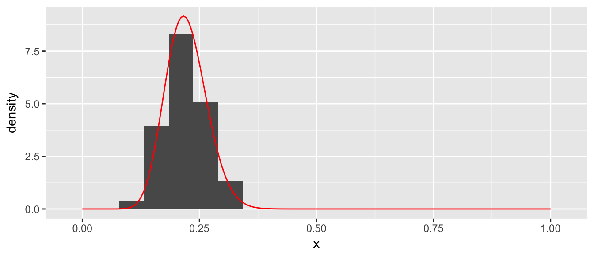
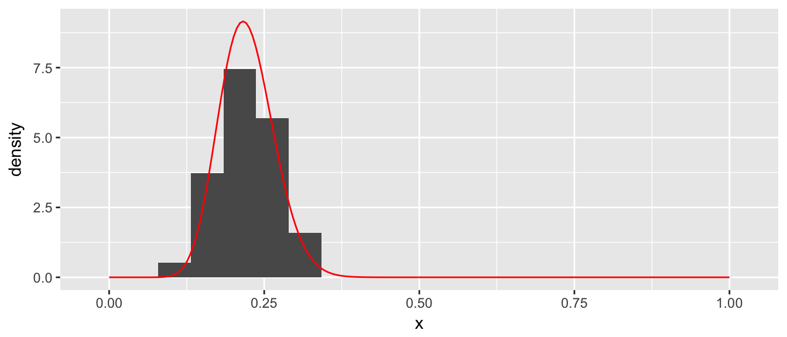
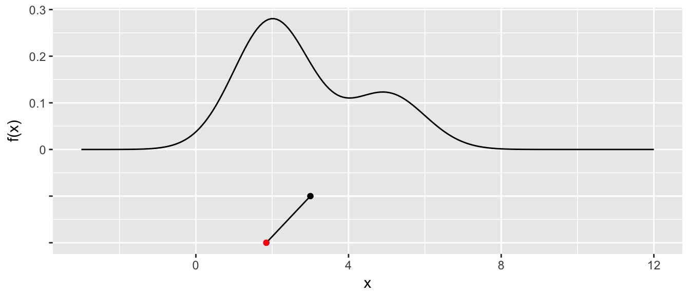

Chapter 3 Markov Chain Monte Carlo
library(ggplot2)
library(dplyr)
library(devtools)
install_github('dereksonderegger/STA578') # Some routines I created for this
library(STA578)Modern statistical methods often rely on being able to produce random numbers from an arbitrary distribution. In this chapter we will explore how this is done.
3.1 Generating \(U\sim Uniform(0,1)\)
It is extremely difficult to generate actual random numbers but it is possible to generate pseudo-random numbers. That is, we’ll generate a sequence of digits, say 1,000,000,000 long such that any sub-sequence looks like we are just drawing digits [0-9] randomly. Then given this sequence, we chose a starting point (perhaps something based off the clock time of the computer we are using). From the starting point, we generate \(U\sim Uniform(0,1)\) numbers by using just reading off successive digits.
In practice there are many details of the above algorithm that are quite tricky, but we will ignore those issues and assume we have some method for producing random samples from \(Uniform\left(0,1\right)\) distribution.
3.2 Inverse CDF Method
Suppose that we wish to generate a random sample from a given distribution, say, \(X\sim Exp\left(\lambda=1/2\right)\). This distribution is pretty well understood and it is easy to calculate various probabilities. The density function is \(f\left(x\right)=\lambda\cdot e^{-x\lambda}\) and we can easily calculate probabilities such as \[\begin{aligned} P\left(X\le3\right) &= \int_{0}^{3}\lambda e^{-x\lambda}\,dx \\ &= e^{-0\lambda}-e^{-3\lambda} \\ &= 1-e^{-3\lambda} \\ &= 0.7769 \end{aligned}\]

Given this result, it is possible to figure out \(P\left(X\le x\right)\) for any value of \(x\). (Here the capital \(X\) represents the random variable and the lower case \(x\) represents a particular value that this variable can take on.) Now thinking of these probabilities as a function, we define the cumulative distribution function (CDF) as
\[F\left(x\right)=P\left(X\le x\right)=1-e^{-x\lambda}\]
If we make a graph of this function we have

Given this CDF, we if we can generate a \(U\sim Uniform(0,1)\), we can just use the CDF function in reverse (i.e the inverse CDF) and transform the U to be an \(X\sim Exp\left(\lambda\right)\) random variable. In R, most of the common distributions have a function that calculates the inverse CDF, in the exponential distribution it is qexp(x, rate) and for the normal it would be qnorm(), etc.
U <- runif(10000, min=0, max=1) # 10,000 Uniform(0,1) values
X <- qexp(U, rate=1/2)
par(mfrow=c(1,2))
hist(U)
hist(X)This is the type of trick that Statistics students might learn in a probability course, but this is hardly interesting from a computationally intensive perspective, so if you didn’t follow the calculus, don’t fret.
3.3 Accept/Reject Algorithm
We now consider a case where we don’t know the CDF (or it is really hard to work with). Let the random variable \(X\) which can take on values from \(0\le X\le 1\) and has probability density function \(f\left(x\right)\). Furthermore, suppose that we know what the maximum value of the density function is, which we’ll denote \(M=\max\,f\left(x\right)\).
x <- seq(0,1, length=200)
y <- dbeta(x, 20, 70)
M <- max(y)
data.line <- data.frame(x=x, y=y)
p <- ggplot(data.line, aes(x=x, y=y)) + geom_line(color='red', size=2) +
labs(y='Density') +
geom_vline(xintercept=c(0,1)) +
geom_hline(yintercept=c(0, max(y)))
p
It is trivial to generate points that are uniformly distributed in the rectangle by randomly selecting points \(\left(x_{i},y_{i}\right)\) by letting \(x_{i}\) be randomly sampled from a \(Uniform(0,1)\) distribution and \(y_{i}\) be sampled from a \(Uniform(0,M)\) distribution. Below we sample a thousand points.
N <- 1000
x <- runif(N, 0,1)
y <- runif(N, 0, M)
proposed <- data.frame(x=x, y=y)
p + geom_point(data=proposed, alpha=.4)
Since we want to select a random sample from the curved distribution (and not uniformly from the box), I will reject pairs \(\left(x_{i},y_{i}\right)\) if \(y_{i}\ge f\left(x_{i}\right)\). This leaves us with the following points.
accepted <- proposed %>%
filter( y <= dbeta(x, 20,70) )
p + geom_point(data=accepted, alpha=.4)
We can now regard those \(x_{i}\) values as a random sample from the distribution \(f\left(x\right)\) and the histogram of those values is a good approximation to the distribution \(f\left(x\right)\).
ggplot(data=accepted, aes(x=x)) +
geom_histogram(aes(y=..density..), bins=20) +
geom_line(data=data.line, aes(x=x,y=y), color='red')
Clearly this is a fairly inefficient way to generate points from a distribution, but it contains a key concept \[x_{i}\textrm{ is accepted if }u_{i}<\frac{f\left(x_{i}\right)}{M}\] where \(y_{i}=u_{i}\cdot M\) is the height of the point and \(u_i\) is a random observation from the \(Uniform(0,1)\) distribution.
Pros/Cons
• Pro: This technique is very simple to program.
• Cons: Need to know the maximum height of the distribution.
• Cons: This can be a very inefficient algorithm as most of the proposed values are thrown away.
3.4 MCMC algorithm
Suppose that we have one observation, \(x_{1}\), from the distribution \(f\left(x\right)\) and we wish to create a whole sequence of observations \(x_{2},\dots,x_{n}\) that are also from that distribution. The following algorithm will generate \(x_{i+1}\) given the value of \(x_{i}\).
Generate a proposed \(x_{i+1}^{*}\) from a distribution that is symmetric about \(x_{i}\). For example \(x_{i+1}^{*}\sim N\left(x_{i},\sigma=1\right)\).
Generate a random variable \(u_{i+1}\) from a \(Uniform(0,1)\) distribution.
If \(u_{i+1}\le\frac{f\left(x_{i+1}^{*}\right)}{f\left(x_{i}\right)}\) then we accept \(x_{i+1}^{*}\) and define \(x_{i+1}=x_{i+1}^{*}\), otherwise reject \(x_{i+1}^{*}\) and define \(x_{i+1}=x_{i}\)
The idea of this algorithm is that if we propose an \(x_{i+1}^{*}\) value that has a higher density than \(x_{i}\), we should always accept that value as the next observation in our chain. If we propose a value that has lower density, then we should sometimes accept it, and the correct probability of accepting it is the ratio of the probability density function. If we propose a value that has a much lower density, then we should rarely accept it, but if we propose a value that is has only a slightly lower density, then we should usually accept it.
There is theory that show that a large sample drawn as described will have the desired proportions that match the distribution of interest. However, the question of “how large is large enough” is a very difficult question.
Actually we only need to know the distribution up to a scaling constant. Because we’ll look at the ratio \(f\left(x^{*}\right)/f\left(x\right)\) any constants that don’t depend on x will cancel. For Bayesians, this is a crucial point.
3.4.1 Mixture of normals
We consider the problem of generating a random sample from a mixture of normal distributions. We first define our distribution \(f\left(x\right)\)
df <- function(x){
return(.7*dnorm(x, mean=2, sd=1) + .3*dnorm(x, mean=5, sd=1))
} x <- seq(-3,12, length=200)
density.data <- data.frame(x=x, y=df(x))
density <- ggplot( density.data, aes(x=x, y=y)) +
geom_line() +
labs(y='f(x)', x='x')
density
Next we define our proposal distribution, which will be \(Uniform\left(x_{i}-2,\,x_{i}+2\right)\).
rproposal <- function(x.i){
out <- x.i + runif(1, -2, 2) # x.i + 1 observation from Uniform(-2, 2)
return(out)
} Starting from \(x_{1}=3\), we will randomly propose a new value.
x <- 3; # starting value for the chain
x.star <- 3 # initialize the vector of proposal values
x.star[2] <- rproposal( x[1] )
x.star[2]## [1] 1.846296if( df(x.star[2]) / df(x[1]) > runif(1) ){
x[2] <- x.star[2]
}else{
x[2] <- x[1]
}We proposed a value of \(x=1.846\) and because \(f\left(1.846\right)\ge f\left(3\right)\) then this proposed value must be accepted (because the ratio \(f\left(x_{2}^{*}\right)/f\left(x_{1}\right)\ge1\) and is therefore greater than \(u_{2}\in\left[0,1\right]\). We plot the chain below the density plot to help visualize the process.
STA578::plot_chain(density, x, x.star)
Next we will repeat the process for ten iterations. If a proposed point is rejected, it will be shown in blue and not connected to the chain. The connected line will be called a traceplot and is usually seen rotated counter-clockwise by 90 degrees.
for( i in 2:10 ){
x.star[i+1] <- rproposal( x[i] )
if( df(x.star[i+1]) / df(x[i]) > runif(1) ){
x[i+1] <- x.star[i+1]
}else{
x[i+1] <- x[i]
}
} STA578::plot_chain(density, x, x.star)
We see that the third step in the chain, we proposed a value near \(x=1\) and it was rejected. Similarly steps \(5\) and \(9\) were rejected because \(f\left(x_{i+1}^{*}\right)\) of the proposed value was very small compared to \(f\left(x_{i}\right)\) and thus the proposed value was unlikely to be accepted.
At this point, we should make one final adjustment to the algorithm. In general, it is not necessary for the proposal distribution to by symmetric about \(x_{i}\). Let \(g\left(x_{i+1}^{*}|x_{i}\right)\) be the density function of the proposal distribution, then the appropriate accept/reject criteria is modified to be
• If \[u_{i+1}\le\frac{f\left(x_{i+1}^{*}\right)}{f\left(x_{i}\right)}\frac{g\left(x_{i}|x_{i+1}^{*}\right)}{g\left(x_{i+1}^{*}|x_{i}\right)}\] then we accept \(x_{i+1}^{*}\) and define \(x_{i+1}=x_{i+1}^{*}\), otherwise reject \(x_{i+1}^{*}\) and define \(x_{i+1}=x_{i}\)
Notice that if \(g\left(\right)\) is symmetric about \(x_{i}\) then \(g\left(x_{i}|x_{i+1}^{*}\right)=g\left(x_{i+1}^{*}|x_{i}\right)\) and the second fraction is simply 1.
It will be convenient to hide the looping part of the MCMC, so we’ll create a simple function to handle the details. We’ll also make a program to make a traceplot of the chain.
?MCMC
# You can look at the source code of many functions by just typing the name.
# This trick unfortunately doesn't work with functions that are just wrappers
# to C or C++ programs or are hidden due to Object Oriented inheritance.
MCMC## function (df, start, rprop, dprop = NULL, N = 1000)
## {
## if (is.null(dprop)) {
## dprop <- function(to, from) {
## 1
## }
## }
## chain <- rep(NA, N)
## chain[1] <- start
## for (i in 1:(N - 1)) {
## x.star <- rprop(chain[i])
## r1 <- df(x.star)/df(chain[i])
## r2 <- dprop(chain[i], x.star)/dprop(x.star, chain[i])
## if (r1 * r2 > runif(1)) {
## chain[i + 1] <- x.star
## }
## else {
## chain[i + 1] <- chain[i]
## }
## }
## return(chain)
## }
## <environment: namespace:STA578>We should let this process run for a long time, and we will just look the traceplot.
chain <- STA578::MCMC(df, 2, rproposal, N=1000) # do this new!
STA578::trace_plot(chain)This seems like it is working as the chain has occasional excursions out tho the tails of the distribution, but is mostly concentrated in the peaks of the distribution. We’ll run it longer and then examine a histogram of the resulting chain.
chain2 <- MCMC(df, chain[1000], rproposal, N=10000)
long.chain <- c(chain, chain2)
ggplot( data.frame(x=long.chain), aes(x=x, y=..density..)) +
geom_histogram(bins=40)All in all this looks quite good.
3.4.2 Common problems
Proposal Distribution
The proposal distribution plays a critical role in how well the MCMC simulation explores the distribution of interest. If the variance of the proposal distribution is too small, then the number of steps to required to move a significant distance across the distribution becomes large. If the variance is too large, then a large percentage of the proposed values will be far from the center of the distribution and will be rejected.
First, we create a proposal distribution with a small variance and examine its behavior.
p.small <- function(x){
return( x + runif(1, -.1, +.1) )
}
chain <- MCMC(df, 2, p.small, N=1000)
trace_plot(chain)In these 1000 steps, the chain has not gone smaller than 1 or larger than 3.5 and hasn’t explored the second “hump” of the distribution yet. If the valley between the two humps was deeper, it is possible that the chain would never manage to cross the valley and find the second hump.
The effect of too large of variance is also troublesome.
p.large <- function(x){
return( x + runif(1, -30, +30) )
}
chain <- MCMC(df, 2, p.large, N=1000)
trace_plot(chain)
This chain is not good because it stays in place for too long before finding another suitable value. It will take a very long time to suitably explore the distribution.
Given these two examples, it is clear that the choice of the variance parameter is a critical choice. A commonly used rule of thumb that balances these two issues is that the variance parameter should be chosen such that approximately \(40-60\%\) of the proposed values are accepted. To go about finding that variance parameter, we will have a initialization period where we tweak the variance parameter until we are satisfied with the acceptance rate.
Burn-in
Another problem with the MCMC algorithm is that it requires that we already have a sample drawn from the distribution in question. This is clearly not possible, so what we do is use a random start and hope that the chain eventually finds the center of the distribution.
<<fig.height=3, fig.width=5>>=
Given this example, it seems reasonable to start the chain and then disregard the initial “burn-in” period. However, how can we tell the difference between a proposal distribution with too small of variance, and a starting value that is far from the center of the distribution? One solution is to create multiple chains with different starting points. When all the chains become well mixed and indistinguishable, we’ll use the remaining observations in the chains as the sample.
<<fig.height=3, fig.width=5>>=
1.4.2 Assessing Chain Convergence
Perhaps the most convenient way to asses convergence is just looking at the traceplots, but it is also good to derive some quantitative measurements of convergence. One idea from ANOVA is that the variance of the distribution we are sampling from \(\left(\sigma^{2}\right)\) could be estimated using the within chain variability or it could be estimated using the variance between the chains.
Let m be the number of chains and n be the number of samples per chain. We define W be the average of the within chain sample variances. Formally we let \(s_{i}^{2}\) be the sample variance of the \(i^{th}\) chain and \(W=\frac{1}{m}\sum_{i=1}^{m}s_{i}^{2}\)
We can interpret W as the amount of wiggle within each chain.
Next we recognize that under perfect sampling and large sample sizes, the chains should be right on top of each other, and the mean of each chain should be very very close to the mean of all the other chains. Mathematically, we’d say the mean of each chain has a distribution \(\bar{x}_{i}\sim N\left(\mu,\frac{\sigma^{2}}{n}\right)\) where \(\mu\) is the mean of the distribution we are approximating. Doing some probability, this implies that \(n\bar{x}_{i}\sim N\left(n\mu,\,\sigma^{2}\right)\). Next, using the m chain means, we could estimate \(\sigma^{2}\) by looking at the variances of the chain means! Let \(\bar{x}_{\cdot\cdot}\) be the mean of all observation and \(\bar{x}_{i\cdot}\) be the mean of the \(i^{th}\) chain. Let \[B=\frac{n}{m-1}\sum_{i=1}^{m}\left(\bar{x}_{i\cdot}-\bar{x}_{\cdot\cdot}\right)^{2}\]
Notice that both W and B are estimating \(\sigma^{2}\), but if the MCMC has not converged (i.e. the chains don’t overlap), the B will be much larger than \(\sigma^{2}\). Likewise, W will be much smaller than \(\sigma^{2}\) because the chains won’t have fully explored the distribution. We’ll put these two estimators together using a weighted average and define.\(\hat{\sigma}^{2}=\frac{n-1}{n}W+\frac{1}{n}\) B Notice that if the chains have not yet converged, then \(\hat{\sigma}^{2}\) should overestimate \(\sigma^{2}\) because the between chain variance is too large. By itself W will underestimate \(\sigma^{2}\) because the chains haven’t fully explored the distribution. This suggests \[\hat{R}=\sqrt{\frac{\hat{\sigma}^{2}}{W}}\] is a useful ratio which decreases to \(1\) as \(n\to\infty\). This ratio (Gelman and Rubin, 1992) can be interpreted as the potential reduction in the estimate of \(\hat{\sigma}^{2}\) if we continued sampling.
A closely related is the number of effective samples from the posterior distribution \(n_{eff}=mn\frac{\hat{\sigma}^{2}}{B}\)
To demonstrate these, we’ll calculate \(\hat{R}\) for the above chains
A useful rule-of-thumb for assessing convergence is if the \(\hat{R}\) value(s) are less than 1.05, then we are close enough. However, this does not imply that we have enough independent draws from the sample to trust our results. In the above example, even though we have \(4 \cdot800=3200\) observations, because of the Markov property of our chain, we actually only have about \(35\) independent draws from the distribution. This suggests that it takes around \(100\) MCMC steps before we get independence between two observations.
To further explore this idea, lets look at what happens when the chains don’t mix as well.